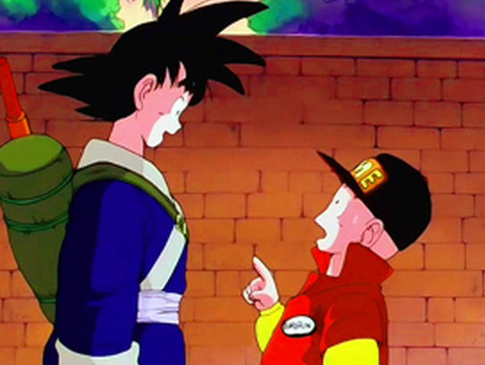
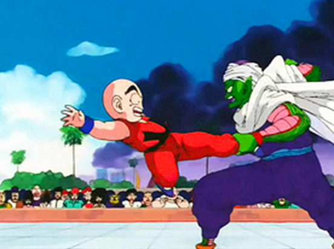
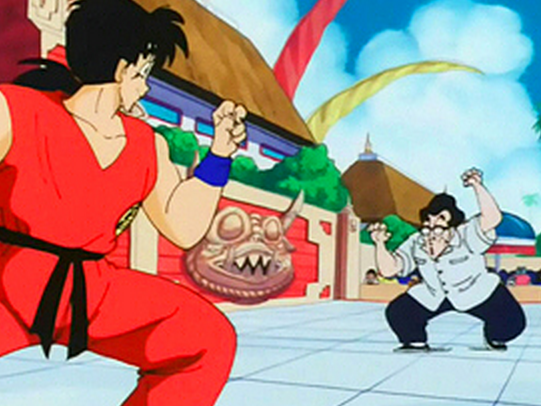
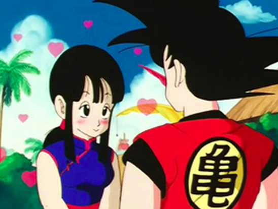
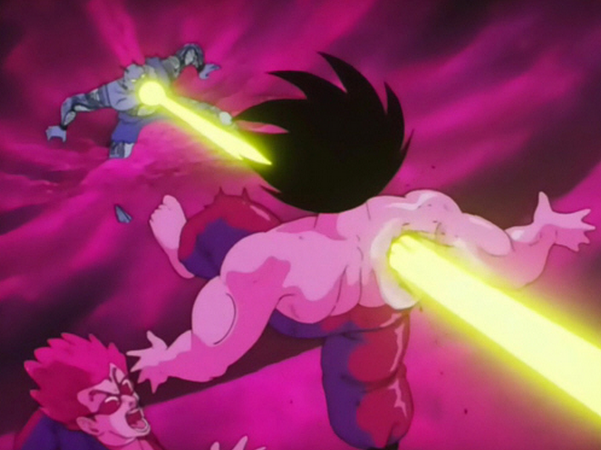
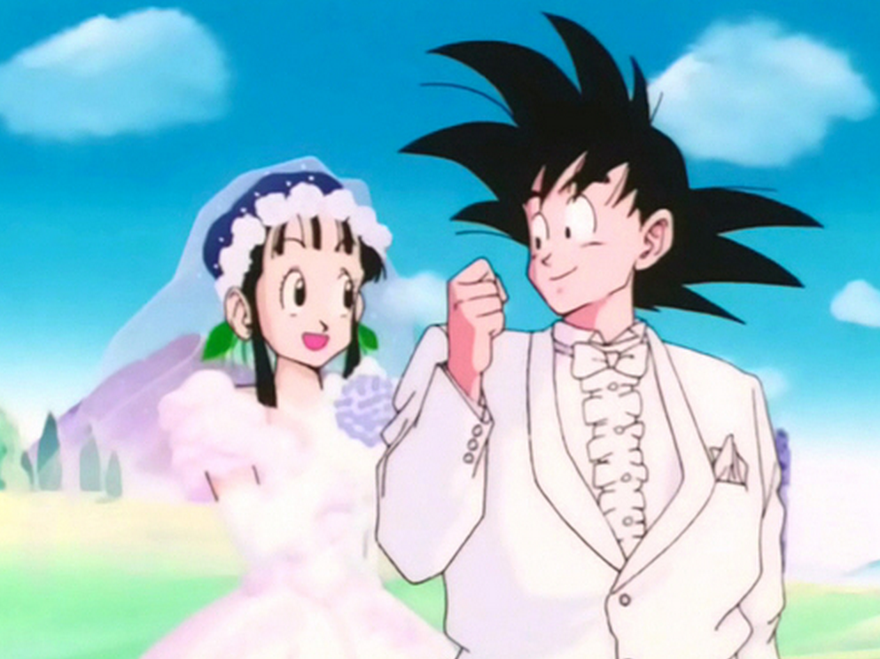

Al cap de un temps es celebra un nou torneig mundial d'arts marcials. En Goku hi apareix ja crescut, deixant enrere la seva aparença de nen. També sense cua, ja que Déu li fa treure dient-li que ja no la necessita. Tots els altres amics d'en Goku (en Krilín, en Yamxa, en Ten Xin Han, etc...) també hi participen, En Satanàs Corpetit Junior també hi participa.
|  |  |
Finalment sorprèn un misteriós candidat, en aparença un home dèbil i escanyolit però que resulta tenir una gran força i venç a en Yamxa amb facilitat. Aquest resulta ser Déu havent posseït un hme per passar desapercabut. No obstant en Satanàs Corpetit Junior venç a Déu. També apareix una misteriosa noia, que resulta ser una nena que havia conegut a en Goku en les seves primeres aventures d'infància, la Xixi, a la qual el Goku sense saber que es deia va prometre de casar-se, i en mig combat en Goku i la Xixi es casen, tot i que oficiaran una ceremònia oficial més endevant.
|  |  |
I finalment serà en Goku, en una gran i espectacular final contra en Satanàs Corpetit, (on aquest creixerà de tamany i l'estadi el torneig quedarà completament destruït) qua guanyarà finalment el gran torneig mundial d'arts marcials després de varis intents perdent a la final.
No obstant en Satanàs Corpetit segueix viu, ja que com li havia dit prèviament Déu a en Goku, si es mor Déu o Satanàs també es morirà automàticament l'altre i amb la seva mort les boles de drac desapareixeran. Un cop acaba el torneig, se li ofereix a en Goku ser el Déu del món, però aquest ho rebutja dient que prefereix viure aventures.
Finalment la sèrie té una petita aventura més on en Goku i la Xixi intenten salvar al pare de la Xixi de morir cremat en un incendi originat per un volcà Per tal de salvar-lo van a buscar un ventall màgic i també van al inframón on es retroben amb en avi d'en Goku que vigila un forn màgic, una fuita del qual és l'origen del incendi. En Goku tapa la fuita, salvant al pare de la Xixi, i finalment s'acaba la sèrie amb una bonica ceremònia de casament d'en Goku i la Xixi.